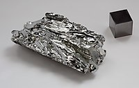

Numero atomico: 42
Massa atomica: 95,95
Temperatura di fusione (°C): 2617
Temperatura di ebolizione (°C): 4639
Energia di prima ionizzazione (kj/mol): 685
Elettronegatività (secondo Pauling): 2,16
Densità: 10,20
Numeri di ossidazione: +1+2+3+4+5+6
Configurazione elettronica: 1s2, 2s2, 2p6, 3s2, 3p6, 3d10, 4s2, 4p6, 4d5, 5s1
Maggiori Informazioni